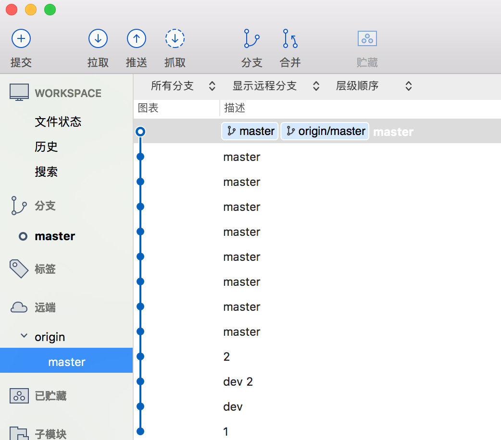
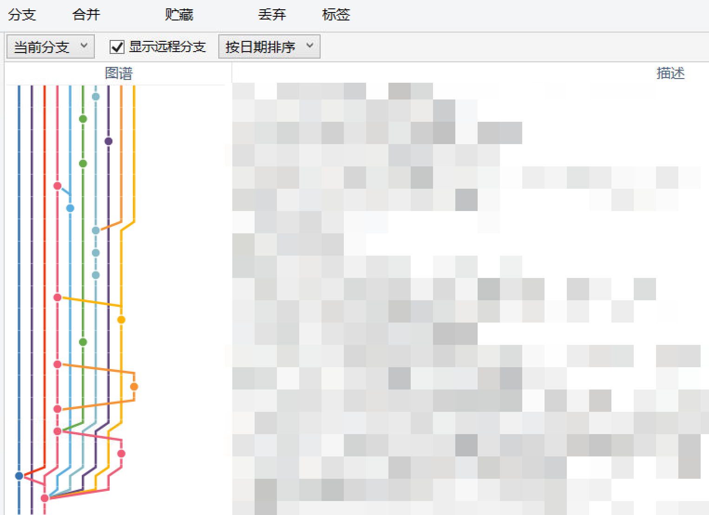
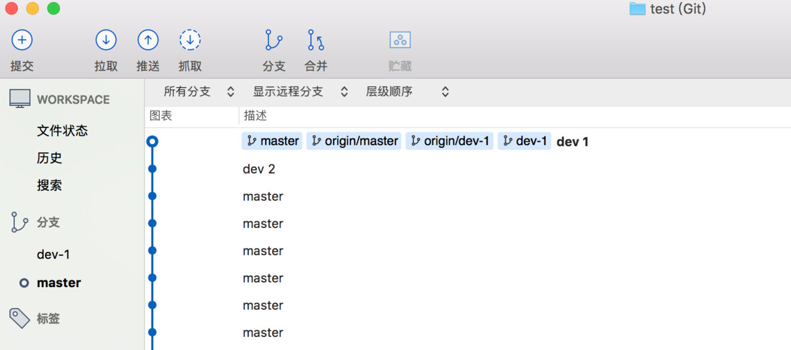
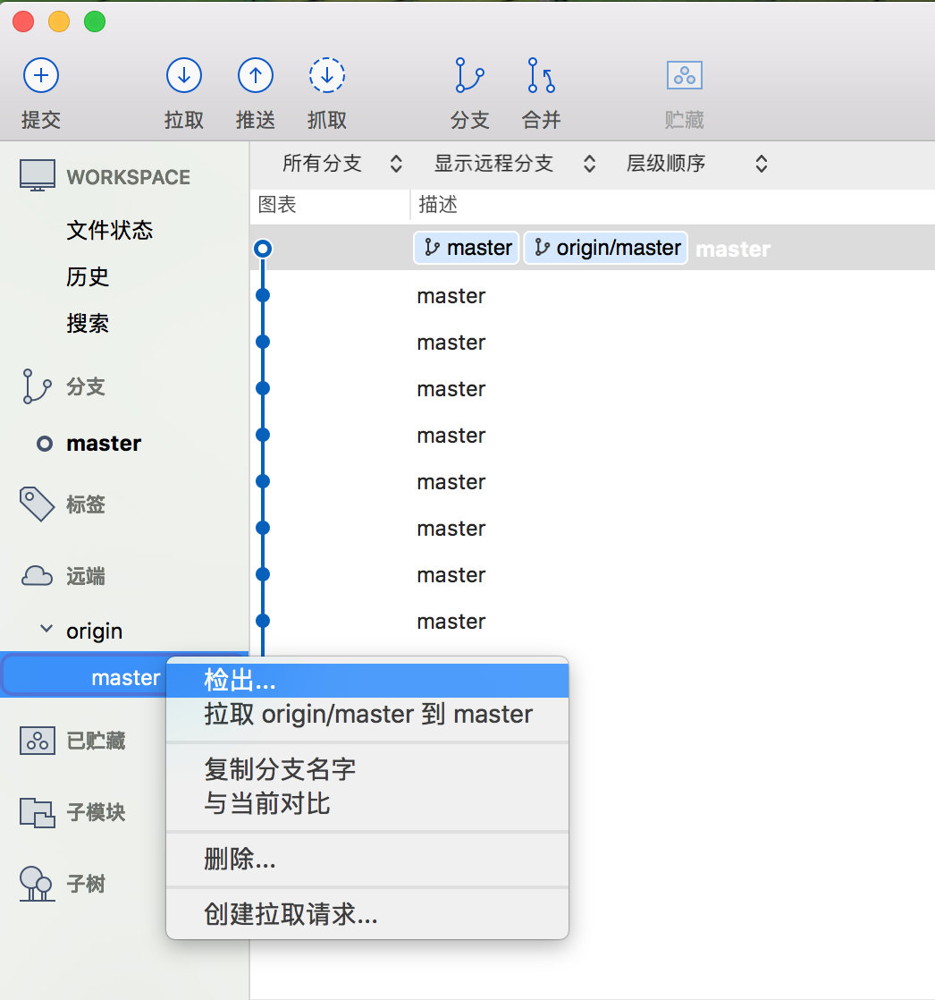
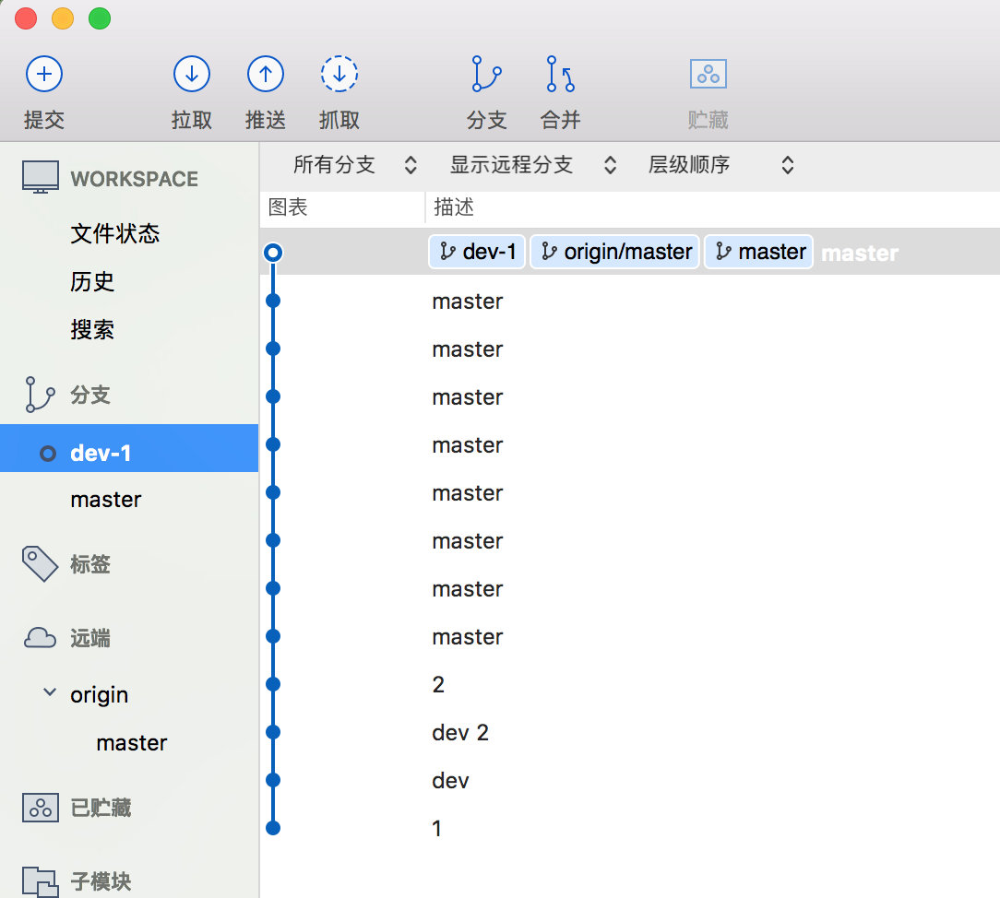
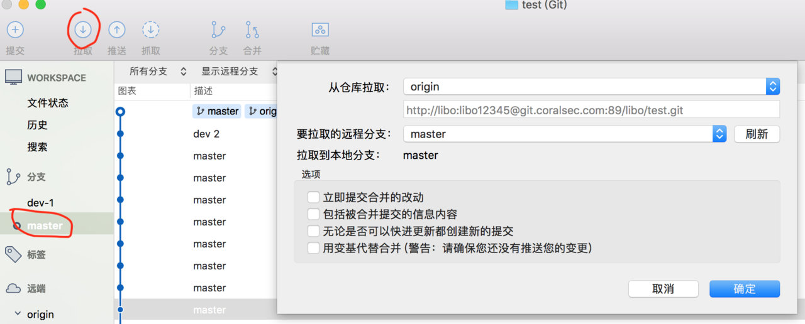
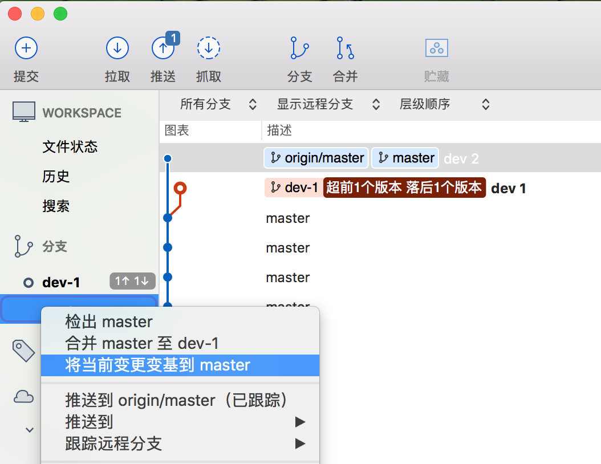
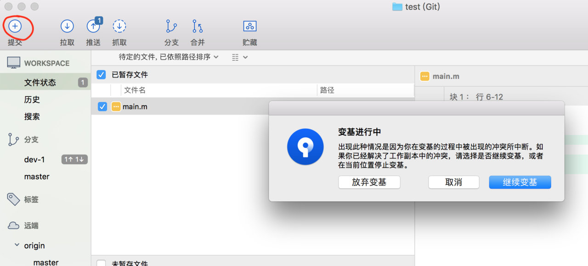
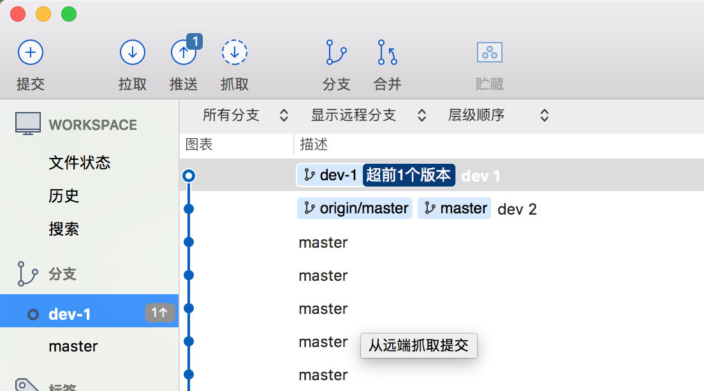
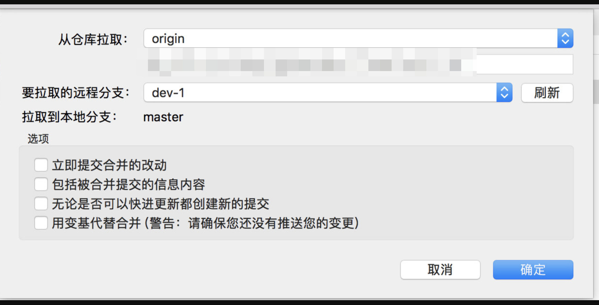

sourceTree 使用rebase操作
git merge vs git rebase
我们先来做个简单的对比吧
原始状态
使用
git merge操作，产生的路径图
使用
git rebase操作，产生的路径图

使用git rebase操作
完成功能分支之后先不 merge，而是
git checkout 主分支回到主干分支去git pull --rebase如果主干有更新，
git rebase 分支更新主分支的内容到功能分支来预检一下，看看在加入了最近别人的改动之后我的功能是否依然 OK（在这个过程中可能会有冲突处理，解决冲突之后使用git add .更新索引，更新完之后不需要执行 commit，只要执行git rebase --continue应用余下的补丁即可）一切就绪之后再次
git fetch主干看看有没有变动（因为在第二步的进行期间没准又有人 push 了新的变化），有的话重复第二部合并功能分支到主干然后 push，收工。
用 git 整合分支的时候，大家更常用的是变基操作 (git rebase) 还是合并操作 (git merge)，你们觉得哪个比较好？
在 sourceTree 中使用 rebase （变基）,使用 rebase 命令保持主分支树的整洁
git 的 GUI 工具 Sourcetree 使用及命令行对比
假如我们要在 master 分支上进行开发，在远端的 master 分支上右键，检出 一个自己的开发分支 dev-1

做一些开发，提交到本地，不要推送（push）到远端,切换到 master 分支，拉取远端的 master 更新，（这里另一个同事在 master 分支上提交了 dev 2 的更新）
切换到自己的开发分支 dev-1，选中 master 分支，右键，选择 将当前变更变基到 master
如果有冲突则合并冲突，点击左上角的加号，选择 继续变基
此时我们的本地更新是基于最新的 master 分支
最后’推送’我们的开发分支 dev-1 到远端,切换到 master 分支，点击 拉取，拉取 dev-1 的更新到 master 分支
再推送 master 分支，就保证了 git 分支的整洁
参考链接
Git rebase使用
团队开发Git分支管理策略